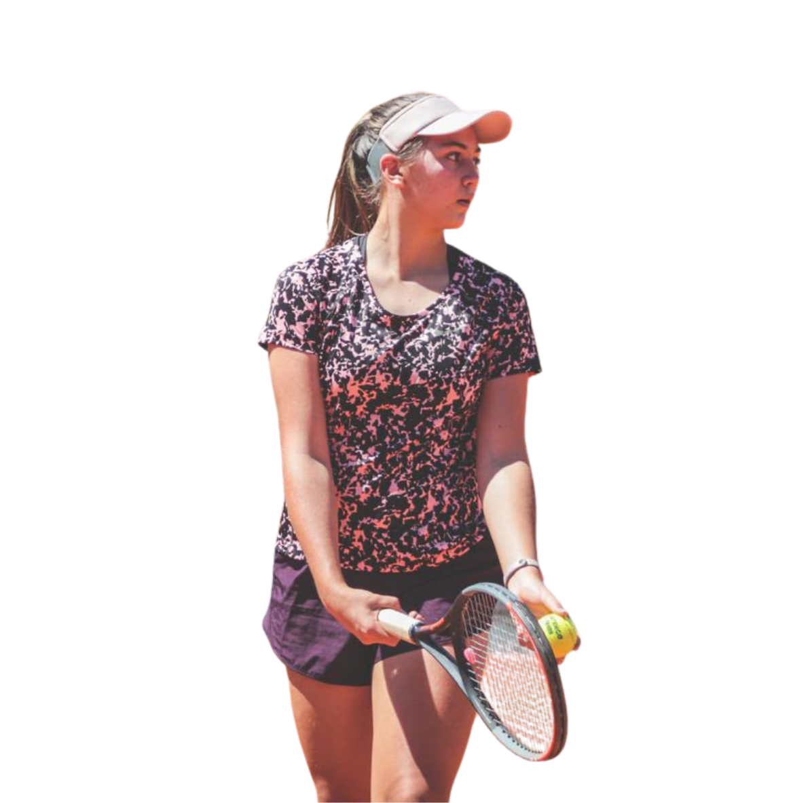
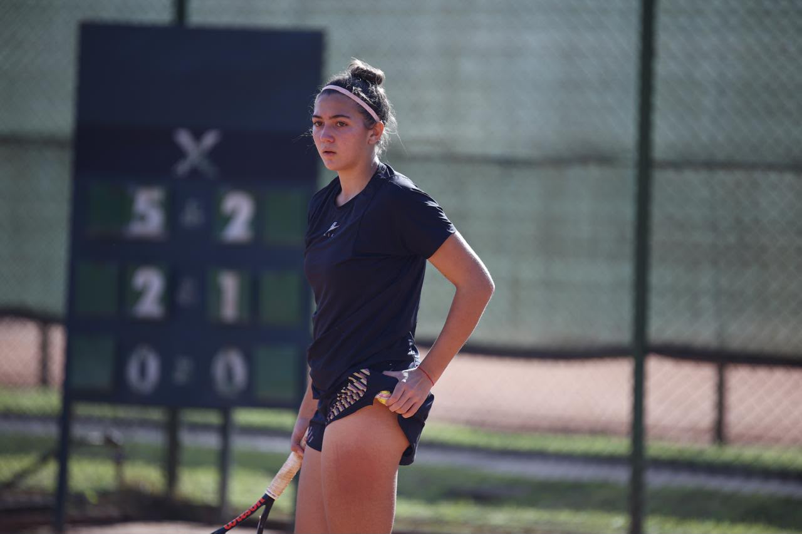
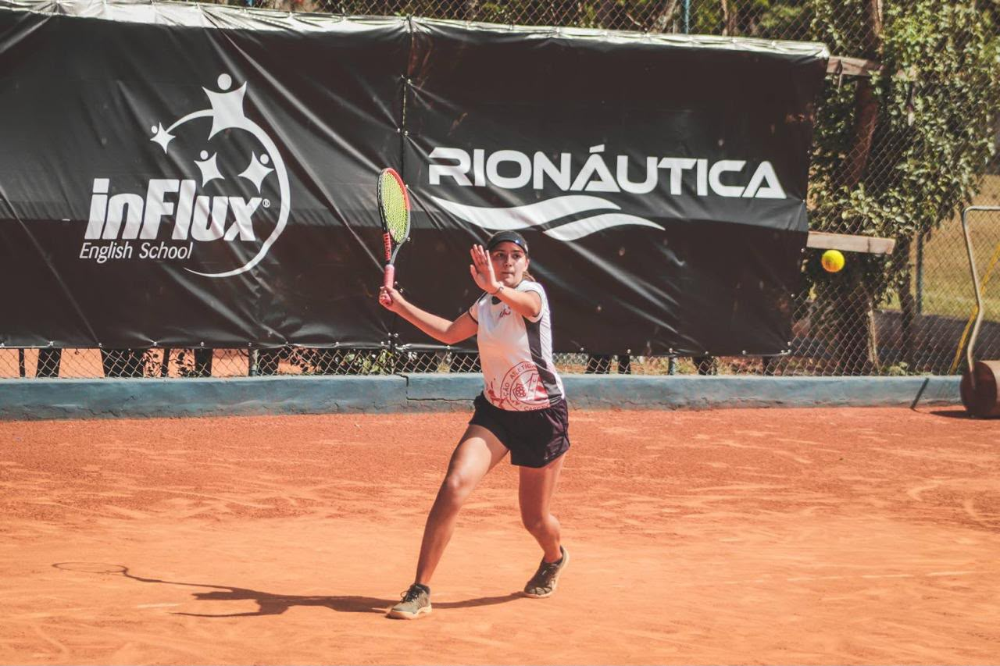
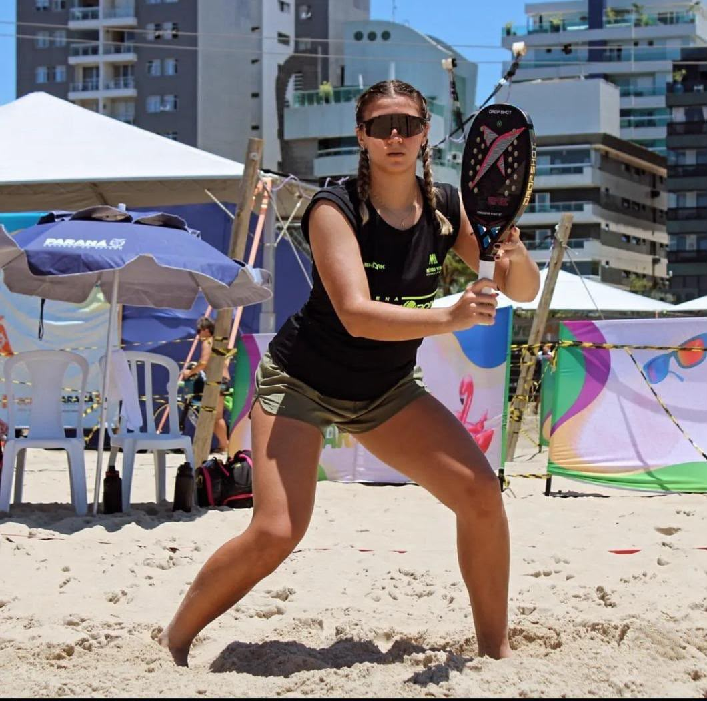
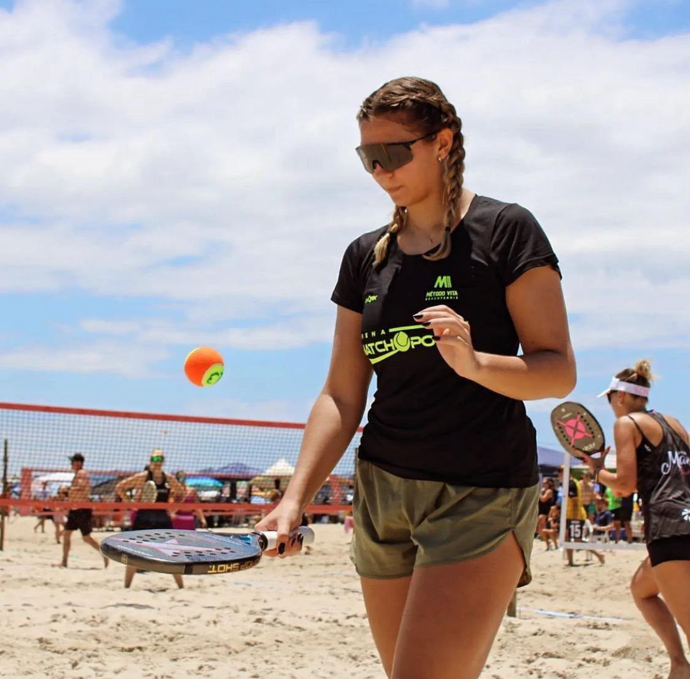

Tennis and Beach Tennis
Since I was ten years old, I have played and competed in tennis. Throughout the years, I learned much more than just technical skills and physical strength. Tennis taught me discipline, perseverance, focus, and, most importantly, how to deal with pressure and challenges. The sport played an important role in my personal development and helped me become more emotionally resilient.
My sister also dedicated herself to tennis and, after improving her skills and competing at a higher level, moved from Brazil to the United States to play college tennis. Inspired by the experiences we shared through the sport, I continued playing competitively until I decided to end my tennis career in 2023.


Instead of simply stopping sports altogether, I decided to start a new journey with beach tennis. Because of my previous experience with tennis, learning the techniques and adapting to the new sport came naturally to me. However, beach tennis offered me a different experience. I felt less psychological pressure, which allowed me to enjoy the sport in a lighter and more relaxed way.


Over the years, I have participated in numerous tournaments, including regional and national competitions. These experiences have shown me that sports, regardless of the discipline, have the power to transform people.
Through tennis, I developed mental strength, discipline, and the ability to remain focused under pressure. Beach tennis, on the other hand, strengthened my teamwork and communication skills, especially because it is commonly played in couples. Together, these experiences have taught me that sports are not only about competition, but also about personal growth, resilience, and building meaningful connections with others.